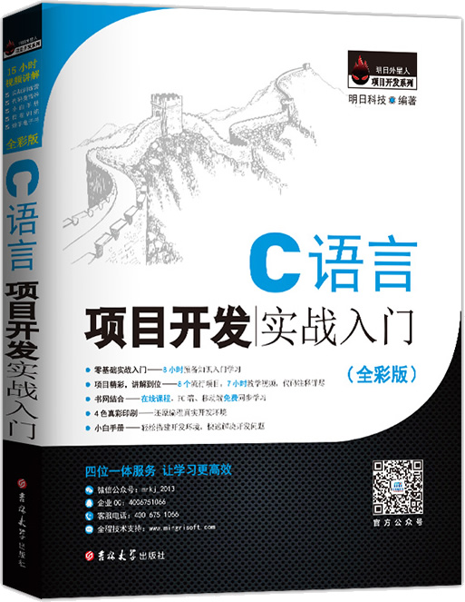

首页 > 书籍下载
《C语言项目开发实战入门》全彩版PDF下载（高清完整版）
|  | 作者：明日科技（Mingri Soft） |
| 出版时间：2022年04月01日 | |
| 出版社：吉林大学出版社 | |
| 书号ISBN：9787567787414 | |
| 总页数：384 | |
| 总字数：70W |
这是一本重在实践的 C 语言入门书籍，全书以项目为主线，让读者在项目实战的过程中掌握 C 语言的各个知识点。
这里提供的是《C语言项目开发实战入门》全彩版的高清 PDF 下载，内容完整，附带目录标签。
这本书定位的读者群体非常宽泛，无论你是 8 岁还是 80 岁，无论是零基础的初学者还是工作多年的程序员，这本书都可以帮助你提高 C 语言编程能力。作为一名老程序员，建议大家先系统地学一遍 C 语言的语法，然后再跟随这本书做项目，学习效果更佳。
自出版之日起，这本书收到了很多读者的好评，比如：
1) 早就想学学编程，从众多书籍中选了这一本，非常好用。
2) 关于C语言的书 我就没见过内容有这么细致入微的，内容也详实准确，很不错，这是非常适合初学者的。
3) 非常好的一套学习C语言的书籍，囊括了零基础开始学习，然后从简单的实例到略微有点复杂的实例，最后到项目实例，由浅入深。
书籍目录
- 第1章 趣味俄罗斯方块（C + 控制台API + 获得键盘按键实现）3
- 1.1 开发背景 6
- 1.2 系统功能设计 6
- 1.3 使用Dev C++项目创建 7
- 1.4 预处理模块设计 11
- 1.5 游戏欢迎界面设计 14
- 1.6 游戏主窗体设计 25
- 1.7 游戏逻辑设计 38
- 1.8 开始游戏 46
- 1.9 游戏按键说明模块 56
- 1.10 游戏规则介绍模块 58
- 1.11 退出游戏 61
- 1.12 一起来找茬 62
- 1.13 本章总结 63
- 攻占C语言大陆 65
- C语言大咖实战训练营 66
- 第2章 挑战2048（C + 指针 + 遍历数组 + 循环控制实现）67
- 2.1 开发背景 70
- 2.2 系统功能设计 70
- 2.3 系统开发环境要求 71
- 2.4 预处理模块设计 71
- 2.5 游戏欢迎界面设计 73
- 2.6 游戏主窗体设计 79
- 2.7 游戏逻辑设计 83
- 2.8 开始游戏模块设计 98
- 2.9 游戏规则介绍模块设计 103
- 2.10 游戏按键说明模块设计 105
- 2.11 一起来找茬 107
- 2.12 本章总结 110
- 攻占C语言大陆. 111
- C语言大咖实战训练营. 112
- 第3章 贪吃蛇大作战（C + 读写文件数据 + 按键监听实现）113
- 3.1 开发背景 116
- 3.2 系统功能设计 116
- 3.3 使用Microsoft Visual C++ 6.0创建项目 117
- 3.4 预处理模块设计 121
- 3.5 游戏欢迎界面设计 125
- 3.6 游戏主窗体设计 132
- 3.7 游戏逻辑设计 141
- 3.8 游戏失败界面设计 151
- 3.9 游戏说明模块设计 160
- 3.10 一起来找茬 162
- 3.11 本章总结 164
- 攻占C语言大陆 165
- C语言大咖实战训练营 166
- 第4章 超级万年历（C + 获得日期时间 + 条件选择实现）167
- 4.1 开发背景 170
- 4.2 系统功能设计 170
- 4.3 系统开发环境要求 171
- 4.4 预处理模块设计 171
- 4.5 主窗体设计 174
- 4.6 打印月历 196
- 4.7 其他算法 205
- 4.8 本章总结 216
- 第5章 图书管理系统（窗体版）（C + MySQL + WINAPI编程实现）217
- 5.1 开发背景 220
- 5.2 系统功能设计 220
- 5.3 系统开发环境要求 223
- 5.4 WINAPI编程 223
- 5.5 工具模块设计 227
- 5.6 登录模块设计 229
- 5.7 客户端主界面设计 234
- 5.8 基本信息管理模块设计 240
- 5.9 库存管理模块设计 248
- 5.10 查询模块设计 255
- 5.11 本章总结 260
- 第6章 学生个人消费管理系统（C + 条件编译 + 数组排序算法实现）261
- 6.1 开发背景 264
- 6.2 系统开发环境要求 264
- 6.3 系统功能设计 264
- 6.4 预处理模块设计 266
- 6.5 主函数设计 268
- 6.6 录入学生消费信息 271
- 6.7 读取学生消费信息 276
- 6.8 查询学生消费信息 278
- 6.9 删除学生消费信息 280
- 6.10 显示学生消费信息 284
- 6.11 保存学生消费信息 286
- 6.12 本章总结 289
- 第7章 企业员工管理系统（C + 存储管理 + 字符串处理函数实现）291
- 7.1 开发背景 294
- 7.2 系统开发环境要求 294
- 7.3 系统功能设计 294
- 7.4 预处理模块设计 294
- 7.5 主函数设计 296
- 7.6 系统初始化 297
- 7.7 系统登录模块设计 301
- 7.8 主界面功能菜单设计 303
- 7.9 添加员工信息 306
- 7.10 删除员工信息 309
- 7.11 查询员工信息 311
- 7.12 修改员工信息 319
- 7.13 统计员工信息 325
- 7.14 系统密码重置 326
- 7.15 本章总结 328
- 第8章 学生信息管理系统（C + 结构体数组 +格式输出实现）331
- 8.1 开发背景 334
- 8.2 系统开发环境要求 334
- 8.3 系统功能设计 334
- 8.4 预处理模块设计 334
- 8.5 主函数设计 336
- 8.6 录入学生信息 339
- 8.7 查询学生信息 343
- 8.8 删除学生信息 346
- 8.9 修改学生信息 348
- 8.10 插入学生信息 351
- 8.11 学生成绩排名 353
- 8.12 统计学生总数 356
- 8.13 显示所有学生信息 357
- 8.14 本章总结 359
- 攻占C语言大陆 360
- 第9章 C语言开发环境的搭建 361
- 9.1 Dev C++的安装与使用 362
- 9.2 Visual C++6.0的安装与使用 365
- 武林荣誉称号榜 370
书籍下载
一键登录，免费下载完整版 PDF，文件名称：《C语言项目开发实战入门》全彩版.pdf